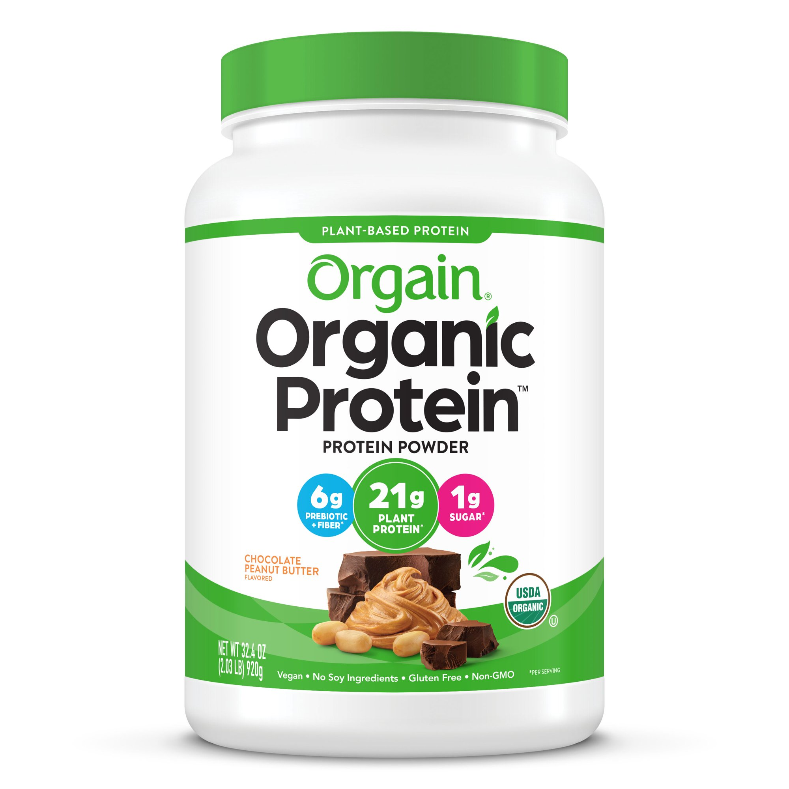
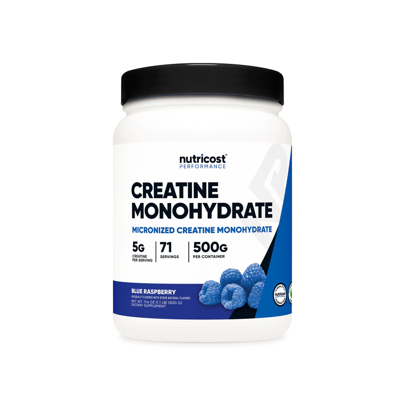
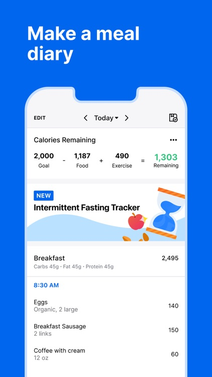
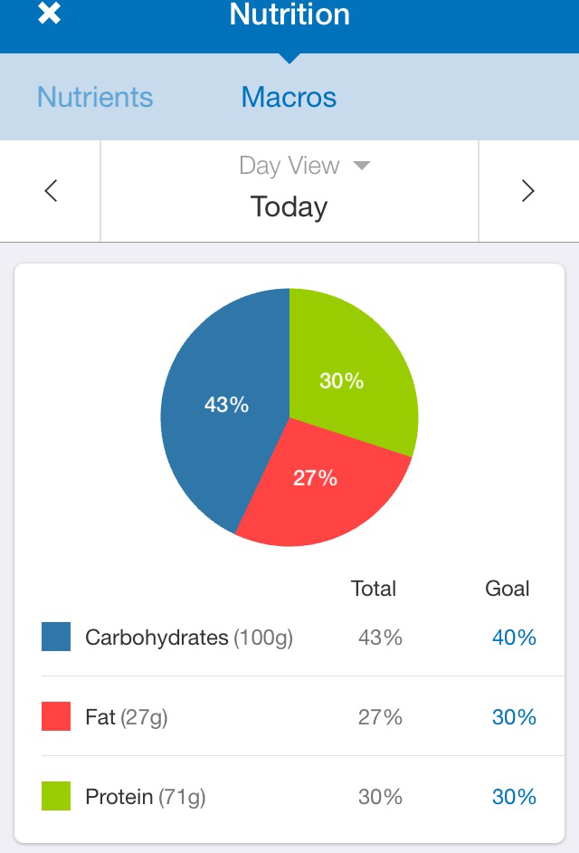

Lose fat, gain muscle, stay pain-free
One of the easiest ways to help meet your nutrition goals and get your protein requirements in a day is with protein powder! There is nothing magical about protein shakes, they are just cheap, easy, very convenient, high in protein yet low in calories and taste great. I personally drink one protein shake after my workout and a smaller one an hour or two before I go to bed.
Whether you have a goal to lose weight or gain weight, or perform better for a certain sport or physical activity, protein powder is something that is extremely effective and useful!
There are many different brands and types of protein powders, but my personal recommendation is plant protein powders. They don't contain lactose like whey (the sugar found in cow milk), which about 70% of people are allergic to and they contain more fiber and micronutrients than whey typically, while having almost the same amount of calories and protein per serving.
I have been using Orgain.com's vegan protein powder for 7 years now! It is my favorite tasting one.
Since I have been using them for so long and like them, I became an ambassador for them, which has given me a discount code I can share: MATTM15 for 15% off. Going through my link will also help support me!
They have other useful supplements that taste good such as their protein bars, but as far as what I would consider most effective, it's their protein powder.
Creatine monohydrate is so effective because it increases the body's ability to produce energy quickly. This is particularly beneficial for activities that require short bursts of high-intensity effort, such as weightlifting and sprinting. When creatine is taken as a supplement, it is converted to creatine phosphate in the body, which helps to replenish the muscles' stores of a compound called adenosine triphosphate (ATP).
ATP is the primary energy currency of cells, and by increasing the amount of ATP available, creatine can help to improve muscle strength and endurance. Additionally, creatine may also help to increase muscle mass by promoting the growth of muscle fibers.
The supplement industry is a weird place. Nothing that is classified as a supplement is regulated by the Food and Drug Administration. Over the years, supplement companies have been exposed for lying about what's in their products, so buying from reputable brands is very important. Going cheap and off the proven path is not usually a good idea here.
It is important to buy supplements made in a GMP (Good Manufacturing Practices) certified facility because GMP certification ensures that the supplements have been manufactured in a facility that adheres to strict quality control standards. This means that the supplements have been produced in a clean, safe environment, and have been tested for purity, potency, and consistency. GMP certified facilities are regularly inspected by regulatory agencies to ensure that they are maintaining these standards. Buying supplements made in a GMP certified facility can give consumers peace of mind that the products they are taking are of high quality and safe to use.
Supplements in general are a good tool to help you put on muscle, lose fat and perform better, but it's important to remember their effectiveness will always be secondary to proper training, a real whole foods diet, and recovery.
MyFitnessPal is an app that allows you to track your caloric intake and how many carbs, fats, protein, and micronutrients that you're getting. It is free to download and use, and it even has a bar code scanner so you don't have to manually enter items.
To understand how many calories a certain food contains and what the macro and micronutrient breakdown are fundamentally changes your relationship with food forever for the best.
An analogy I love to use to descibe food is it's like a budget: Whether or not you track how much you earn and how much you spend, you are still constrained by what you make/your bills. If you track, you can figure out where you have room to spend and where you could have room to cut back.
Nutrition is no different. The "bills" are essentially making sure you meet your basic needs of carbs, fat, protein, and micronutrients. Once you have made sure you've met those and you still have room left over, you are on still track to hit your goals even if you have something you may just enjoy, like a piece of cake, candy, whatever it is that you love.
Once you see food in this light, you understand food does not exist in a binary good versus bad state; it is a spectrum. Oreos when you are low on carbs, fats, and calories on the day is actually helpful than not eating them. More grilled chicken won't do much. Inversely, on a day where you're high in calories, carbs and fat and need more protein, oreos are not most helpful and a lean source of protein will be. To learn when to spend and when to cut back makes sure you have control over your body and goals.
Food is meant to be enjoyed, but it is also meant to serve you. I believe very strongly a healthy relationship with food is cultivated under this context. You learn you may always have what you love, just in the right amounts. Nothing is off limits, nothing is truly bad.